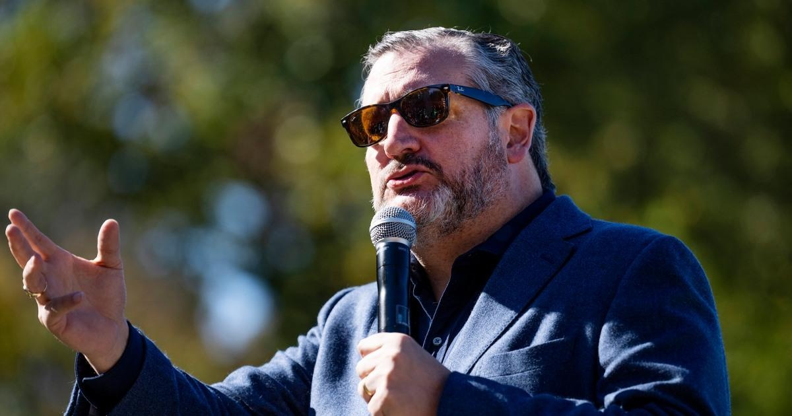

Why Cruz’s ‘banana republic’ response to Trump’s indictment is wrongSoon after Donald Trump’s first indictment in March, several Republicans suggested prosecutors were lowering the United States’ status. Sen. Rand Paul of Kentucky, for example, told NBC News, “You know, the countries that indict former presidents that we see around the world, we usually don’t have a great deal of respect for them.” After the former president’s second indictment, the public heard similar talking points. Rep. Troy Nehls of Texas wrote “President Trump has been indicted. We live in a Banana Republic.” (I’m going to assume he didn’t mean to capitalize those last two words, which left the impression that Americans now live in a clothing retailer.) A day earlier, Rep. Harriet Hageman of Wyoming insisted, “The criminal prosecution of political adversaries is something that Third World countries do.” And now that Trump has been indicted for a third time — and counting — we’re hearing the same rhetoric from prominent GOP voices once again. Consider, for example, what Sen. Ted Cruz told The Dallas Morning News: “We’ve entered banana republic territory,” Cruz said, noting that Trump is the first president or former president ever indicted. Trump’s many critics point out that he’s the first defeated president to resist the peaceful transfer of power. Around the same time, Rep. Byron Donalds of Florida issued a similar statement that made the case that Trump’s indictment “is something you expect in a third-world country, not the United States of America.” It’s important to understand the degree to which Republicans have gotten this backward. Revisiting our earlier coverage, stable democracies that take the rule of law seriously hold criminal suspects accountable — even if they’re politically powerful, and even if they served in government at the highest levels. In fact, on the international stage, this has happened in recent years with some regularity. Italy prosecuted a former prime minister. France prosecuted a former president and a former prime minister. South Africa prosecuted a former president. South Korea prosecuted a former president. Brazil has prosecuted more than one former president. |
 |